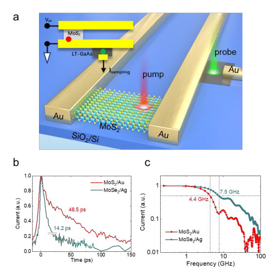


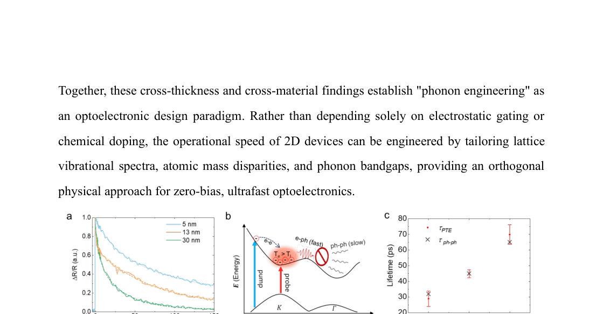
Authors: Yuwei Zhang, Dongyang Wan, Tao Zhou, Hao Wu, Junpeng Lu, Zhenhua Ni
Type: experiment · Category: other · PDF: https://arxiv.org/pdf/2609.10500v1
Analysis basis: full PDF text, analyzed in chunks
Topic relevance: Keldysh / 2PI / non-Gaussian methods 1/5 · correlated / nonlocal dissipation 1/5 · driven-dissipative phase transition 1/5 · methods for driven-dissipative 1/5 · non-equilibrium universality 1/5 · quantum measurements 1/5


Summary. This research demonstrates that the ultrafast response in 2D TMDC optoelectronics is not limited by conventional charge drift but by hot-carrier super-diffusion. The key finding is that the device speed is intrinsically limited by the optical-to-acoustic phonon scattering lifetime, establishing phonon engineering as a powerful new paradigm for designing high-speed, self-powered electronic devices.
Why it may be interesting. While primarily experimental, the work provides a clear, quantitative link between lattice vibrations (phonons) and macroscopic electronic device performance, which is a key concept in non-equilibrium many-body physics relevant to open quantum systems.
Main problem. The operational speed of 2D transition metal dichalcogenides (TMDCs) is limited by low room-temperature mobilities and carrier transit delays, hindering their use in high-speed optoelectronics.
Main result. The ultrafast response is governed by hot-carrier super-diffusion, which is quantitatively limited by the intrinsic optical-to-acoustic phonon scattering lifetime (phonon bottleneck).
Method. The study uses on-chip terahertz optoelectronic sampling under zero bias, complemented by ultrafast pump-probe spectroscopy to measure transient photocurrents.
Model / system. The system involves 2D TMDCs ($ ext{MoS}_2$, $ ext{MoSe}_2$) interfaced with Ohmic metal contacts ($ ext{Au}$, $ ext{Ag}$). The physics distinguishes between drift-limited transport and hot-carrier super-diffusion driven by an interfacial electron temperature gradient.
Key observables. Ultrafast relaxation lifetimes (e.g., 48.5 ps), intrinsic 3-dB bandwidths (e.g., 7.5 GHz), and the quantitative synchronization between macroscopic electrical lifetime and microscopic phonon scattering lifetime.
Important parameters / regimes. Zero bias operation, Ohmic contacts, phonon bottleneck time scale, and the material-dependent phonon scattering rates ($ ext{MoS}_2$ vs $ ext{MoSe}_2$).
Assumptions / limitations. The use of Ohmic contacts and zero bias successfully eliminates external parasitic delays and conventional drift-limited transport mechanisms.
Figures summary. Figures illustrate time-resolved photocurrents showing clean single-exponential decay in Ohmic devices versus slow, drift-tailed transients in Schottky devices, and correlate the electrical decay time with phonon scattering times.
Paper structure. The paper establishes the problem (speed limits in TMDCs), presents the methodology (zero-bias, on-chip THz sampling), demonstrates the mechanism (ruling out drift via spatial/bias mapping), and concludes by linking the speed limit to the phonon bottleneck, proposing phonon engineering.
Two-dimensional transition metal dichalcogenides (TMDCs) are promising for low-power optoelectronics, yet their operational speed is widely considered constrained by low room-temperature mobilities and carrier transit delays. Here, by combining on-chip terahertz optoelectronic sampling with thermally evaporated Ohmic contacts, we eliminate external parasitic delays and directly capture the intrinsic interfacial photoresponse in unencapsulated TMDCs under zero bias. The devices achieve ultrafast relaxation lifetimes of 48.5 ps in MoS2/Au and 14.2 ps in MoSe2/Ag, translating to intrinsic 3-dB bandwidths of 4.4 GHz and 7.5 GHz, respectively. Spatial scanning and bias-dependent measurements show that this response is position-independent and bias-immune, ruling out conventional drift-limited transport and identifying hot-carrier super-diffusion driven by an interfacial electron temperature gradient as the operative mechanism. Furthermore, ultrafast pump-probe spectroscopy reveals that the macroscopic response time is quantitatively synchronized with the microscopic optical-to-acoustic phonon scattering lifetime governed by the intrinsic phonon bottleneck. Our findings establish phonon engineering as a viable paradigm to tailor non-equilibrium optoelectronic dynamics, offering a blueprint for zero-bias, ultrafast, self-powered devices.
Authors: A. D. Levin, A. S. Jaroshevich, Z. D. Kvon, V. A. Chitta, M. S. Aksenov, D. V. Dmitriev, A. K. Bakarov, G. M. Gusev
Type: both · Category: other · PDF: https://arxiv.org/pdf/2609.10511v1
Analysis basis: full PDF text, analyzed in chunks
Topic relevance: Frenkel-Kontorova 1/5 · Keldysh / 2PI / non-Gaussian methods 1/5 · analog quantum simulation 1/5 · methods for driven-dissipative 1/5 · non-equilibrium universality 1/5


Summary. This work reports on the observation and theoretical analysis of positive magnetoresistance in GaAs Corbino devices. By applying hydrodynamic theories, the authors successfully separate the bulk viscous transport contribution from boundary effects. The findings establish Corbino magnetotransport as a sensitive, bulk-sensitive probe for studying viscous electron flow in 2DEGs.
Why it may be interesting. While focused on solid-state transport, the detailed modeling of non-equilibrium, viscous, and hydrodynamic flow in mesoscopic geometries provides a rich example of continuum physics applicable to open quantum systems or complex many-body dynamics.
Main problem. The study investigates the origin of positive magnetoresistance observed in high-mobility GaAs Corbino devices by analyzing hydrodynamic magnetotransport.
Main result. The observed magnetoresistance is predominantly governed by the bulk hydrodynamic response, which can be analyzed by fitting the data to theoretical models incorporating finite-slip boundary conditions.
Method. The authors analyze magnetoresistance measurements ($\Delta R \propto B^2$) using hydrodynamic theories that describe the crossover between diffusive and viscous electron flow in an annular geometry.
Model / system. The physical system is a GaAs Corbino geometry (2DEG in an annulus). The model uses hydrodynamic theories to describe current flow, incorporating finite-slip boundary conditions at current-penetrable contacts.
Key observables. Positive magnetoresistance ($\Delta R$) exhibiting a quadratic dependence on the perpendicular magnetic field ($B^2$), and the temperature dependence of the extracted relaxation rates.
Important parameters / regimes. The analysis spans regimes from the diffusive limit to the hydrodynamic Stokes limit, characterized by geometric ratios and temperature-dependent scattering rates.
Assumptions / limitations. The analysis assumes the validity of the hydrodynamic description and accounts for boundary effects (finite slip and field-dependent contact voltage) as separate corrections to the bulk response.
Figures summary. Figures show schematic geometries, magnetoresistance vs. $B^2$ plots, and temperature/radius dependence of the magnetoresistance coefficient ($\alpha$).
Paper structure. The paper progresses from presenting the experimental observation of quadratic magnetoresistance in Corbino devices to applying detailed hydrodynamic models that account for the crossover between different transport regimes and boundary corrections.
We report the observation of positive magnetoresistance in high-mobility GaAs Corbino devices. Over a broad intermediate-temperature range, the resistance exhibits a quadratic dependence on perpendicular magnetic field. We analyze the data within hydrodynamic theories of magnetotransport in the Corbino geometry, which describe the crossover between the diffusive and viscous regimes, including finite-slip boundary conditions appropriate for current-penetrable contacts. The extracted relaxation rates are consistent with an approximately $T^2$ temperature dependence of the electron-electron scattering contribution. The extracted viscous relaxation parameters are consistent with those obtained from Hall-bar measurements. Comparison with theory indicates that the observed magnetoresistance is predominantly governed by the bulk hydrodynamic response, while finite slip modifies the Stokes--Ohm crossover quantitatively and the field-dependent boundary voltage provides a separate correction. These results show that Corbino magnetotransport can serve as a complementary bulk-sensitive probe of viscous electron flow.
Authors: Prakitr Srisuma, Peter Hou, Shashank Venkat Muddu, Neda Nazemifard, Allan S. Myerson, Richard D. Braatz
Type: both · Category: other · PDF: https://arxiv.org/pdf/2609.10256v1
Analysis basis: full PDF text, analyzed in chunks
Topic relevance: Keldysh / 2PI / non-Gaussian methods 1/5 · analog quantum simulation 1/5 · methods for driven-dissipative 1/5
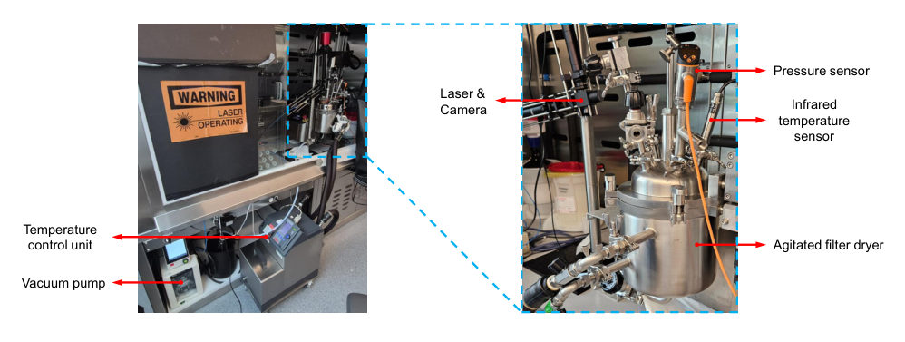


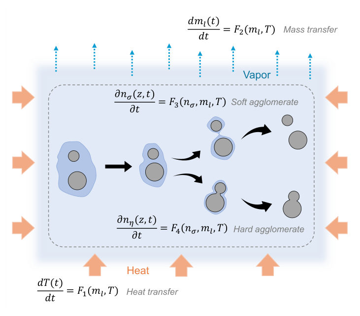
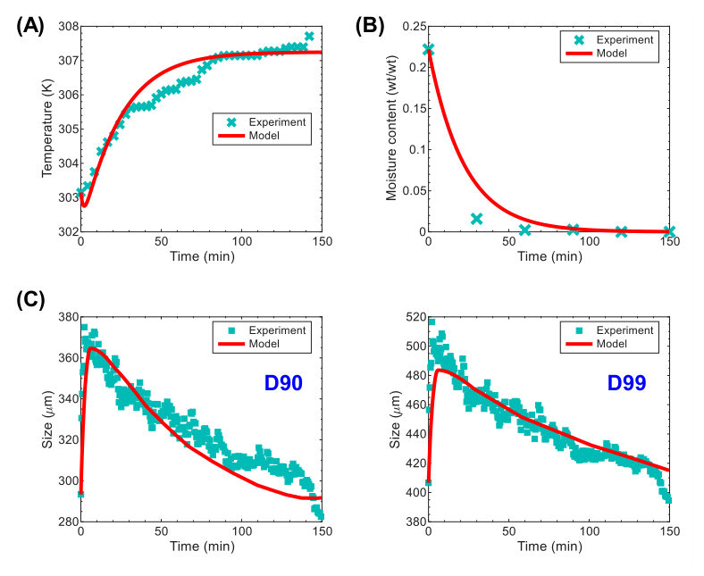
Summary. This paper presents a comprehensive, integrated mechanistic model combining Population Balance Modeling (PBM) with multiphysics analysis to predict particle agglomeration in agitated filter dryers. By tracking soft and hard agglomerates, the model allows for the rational design and operation of pharmaceutical drying processes to ensure consistent product quality. This work is valuable for process engineering optimization in solid-state chemical manufacturing.
Why it may be interesting. While the subject is chemical engineering, the rigorous application of population balance equations, coupled with complex transport phenomena modeling, shares mathematical parallels with kinetic rate processes studied in non-equilibrium statistical mechanics.
Main problem. The primary challenge addressed is predicting and mitigating undesired agglomeration of small molecules during the agitated filter drying (AFD) process, as hard agglomerates lead to off-spec products and equipment damage.
Main result. The developed model successfully predicts the evolution of particle size distribution (PSD) and quantifies the impact of agglomeration, showing that process parameters like solubility and mass transfer rates significantly influence the final particle size.
Method. The authors developed a novel mechanistic model by integrating Population Balance Modeling (PBM) with multiphysics modeling to describe heat, mass, and particle dynamics.
Model / system. The system is an Agitated Filter Dryer (AFD) used in pharmaceutical manufacturing. The model couples energy balance (heat transfer), mass transfer (solvent evaporation), and a PBE that explicitly tracks the formation and breakage of soft and hard agglomerates.
Key observables. Product temperature (T), moisture content ($m_l$), Particle Size Distribution (PSD), and the populations of soft ($\sigma$) and hard ($\eta$) agglomerates.
Important parameters / regimes. Solubility, mass transfer rates, and the ratio of liquid bridge disappearance to solid bridge formation are key parameters influencing agglomeration kinetics.
Assumptions / limitations. The system is assumed to be well mixed due to continuous agitation, and the model makes specific functional form assumptions for the agglomeration and breakage kernels dependent on moisture content.
Figures summary. Figures illustrate the AFD setup, the mechanistic model components, and time evolution plots showing mass, particle number, and PSD (D90/D99) under varying conditions, confirming mass conservation.
Paper structure. The paper progresses from identifying the industrial problem (agglomeration in AFDs) to presenting the integrated PBM/Multiphysics framework, detailing the governing equations for energy and mass transfer, and finally validating the model against experimental data and theoretical limits.
Agitated filter dryers (AFDs) are a crucial unit operation in small molecule manufacturing that enables simultaneous filtration, washing, and drying of active pharmaceutical ingredients. One of the key challenges in AFDs is associated with undesired agglomeration, where the presence of hard agglomerates results in off-spec products, equipment damage, and additional downstream processing. This article presents a novel mechanistic model that describes the formation of soft and hard agglomerates during agitated filter drying. By integrating population balance and multiphysics modeling, the model can accurately predict the evolution of the product temperature, moisture content, and particle size distribution, and hence quantify the extend and impact of undesired agglomeration across various operating conditions. Our proposed model-based framework enables the rational design and operation of AFDs for improving the product quality and process reliability.
Authors: Jong-Guk Choi, Avinash Kumar Chaurasiya, Jaimin Kang, Venkatesh Vadde, Peter G. Lim, Roman Khymyn, Ahmad A. Awad, Akash Kumar, Mark C. Hersam, Vinayak P. Dravid, Pedram Khalili Amiri, Johan Åkerman
Type: both · Category: other · PDF: https://arxiv.org/pdf/2609.10131v1
Analysis basis: full PDF text, analyzed in chunks
Topic relevance: analog quantum simulation 1/5 · driven-dissipative phase transition 1/5 · non-equilibrium universality 1/5

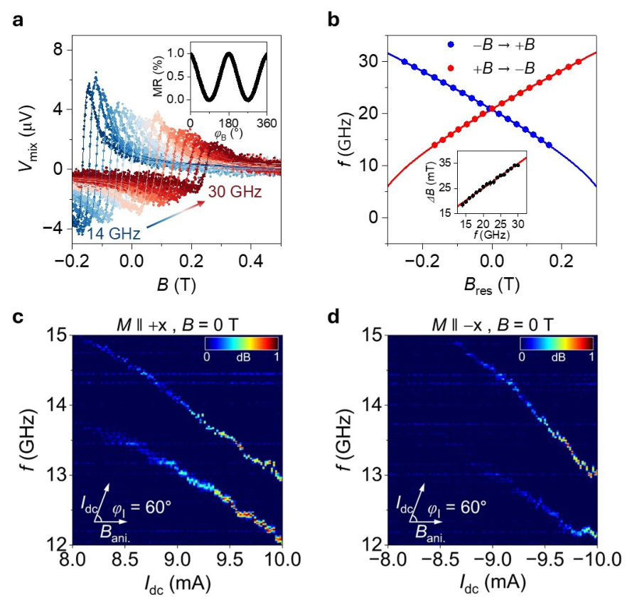


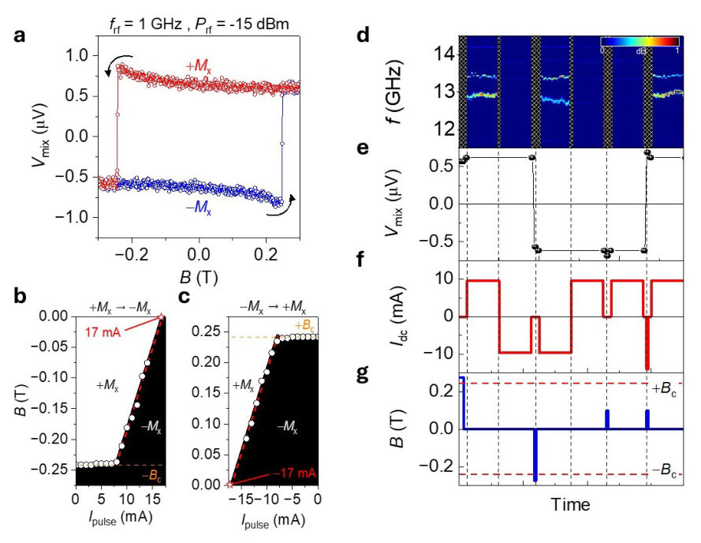
Summary. This work introduces a novel spintronic device architecture using epitaxial Co/Pt films to create reconfigurable, field-free spin Hall nano-oscillators. By exploiting the large, intrinsic magnetic anisotropy derived from crystal growth, the device achieves stable, high-frequency auto-oscillations at zero applied field. This establishes crystallographic anisotropy as a powerful, non-volatile material design rule for next-generation spintronic oscillators.
Why it may be interesting. While focused on spintronics, the concept of using intrinsic material symmetries (crystallographic anisotropy) to engineer non-equilibrium, coherent dynamics (auto-oscillations) without external driving fields shares conceptual parallels with engineering quantum states using engineered Hamiltonians or boundary conditions in AMO physics.
Main problem. The primary goal is to develop reconfigurable, field-free spin Hall nano-oscillators (SHNOs) to overcome the limitation of requiring a global external magnetic bias for operation.
Main result. The authors demonstrate that utilizing the intrinsic crystallographic anisotropy of epitaxial Co/Pt bilayers can generate a sufficient internal magnetic bias, enabling stable, high-frequency auto-oscillations above 10 GHz without external fields.
Method. The research combines advanced experimental techniques, including Spin-Torque Ferromagnetic Resonance (STFMR) and micro-focused Brillouin Light Scattering ($\mu$-BLS), with micromagnetic simulations.
Model / system. The system involves epitaxial Co/Pt bilayers grown on MgO(110), where the crystallographic anisotropy of the hexagonal Co layer dictates the magnetic easy axis and provides the necessary internal field. The device is patterned into nano-constrictions for localized spin dynamics.
Key observables. Field-free auto-oscillation frequency (>10 GHz), nonvolatile reconfiguration of active current polarity based on remanent magnetization, and the tuning of excitation thresholds via the angle between the current and anisotropy axes.
Important parameters / regimes. Anisotropy field ($ ext{B}_{ ext{ani}}$) $\approx 0.36 ext{ T}$; oscillation frequency $>10 ext{ GHz}$; current angle ($\phi_I$) dependence of the threshold current.
Assumptions / limitations. The method relies on the preservation and utilization of the large, intrinsic crystallographic anisotropy established during the epitaxial growth process.
Figures summary. Figures illustrate the epitaxial alignment and anisotropy confirmation via hysteresis loops, show STFMR spectra confirming field-free oscillations dependent on remanent magnetization, and use $\mu$-BLS to map the spatial confinement and angular tuning of the oscillation modes.
Paper structure. The paper progresses from establishing the material system and confirming the large anisotropy field (via hysteresis/STFMR) to demonstrating field-free auto-oscillations. It then details the control mechanisms, showing how the current angle tunes the excitation threshold and induces mode synchronization, culminating in the establishment of this anisotropy as a design principle.
Spin Hall nano-oscillators (SHNOs) are nanoscale microwave sources for wireless communication, neuromorphic computing and oscillator-based Ising machines, but conventional devices require a global magnetic bias. Here we replace this bias through crystallographic anisotropy in epitaxial Co/Pt. Growth of hcp Co with its c-axis in the film plane produces an anisotropy field of about 0.36 T and enables field-free auto-oscillations above 10 GHz in nanoconstriction SHNOs. The active current polarity is selected by the remanent magnetization, providing nonvolatile reconfiguration of the oscillation state. Micro-focused Brillouin light scattering confirms that the nonlinear response is confined to the nanoconstriction region. Lithographic control of the angle between the current and anisotropy axes tunes the excitation threshold and drives two spectral branches from separated modes to a dominant single branch, consistent with mutual synchronization. These results establish epitaxial crystallographic anisotropy as a route to reconfigurable field-free spintronic oscillators and oscillator networks.
Authors: Evangelos Sotiropoulos, Philippe Regreny, Matthieu Bugnet, Nicholas P. Blanchard, Sébastien Cueff, José Penuelas, Nicolas Chauvin
Type: experiment · Category: other · PDF: https://arxiv.org/pdf/2609.09870v1
Analysis basis: full PDF text, analyzed in chunks
Topic relevance: interference shaping light 1/5 · quantum optics experiment 1/5


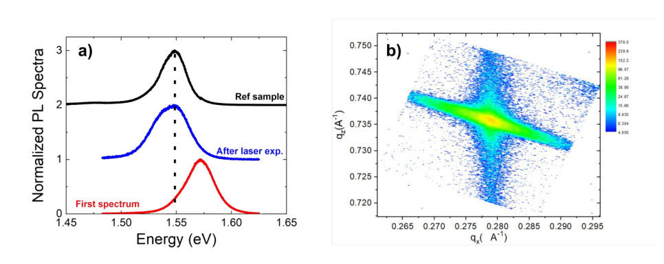
Summary. This research presents a novel, contact-free method to tune the emission wavelength of quantum dots by exploiting the photo-induced relaxation of strain within the surrounding amorphous shell. By monitoring the spectral redshift using photoluminescence, the authors demonstrate that this mechanism allows for precise, local wavelength control, making the system highly promising for scalable quantum photonic devices.
Why it may be interesting. This work provides a highly controllable, non-invasive method for tuning quantum emitter wavelengths post-fabrication, which is crucial for integrating multiple spectral sources into a single quantum photonic circuit.
Main problem. The primary challenge is achieving spectrally matched emitters for scalable quantum-photonic technologies, due to inherent emitter-to-emitter variations in quantum dot emission energies.
Main result. The authors demonstrated a contact-free, post-growth spectral tuning of InAs quantum dot emission by photo-inducing strain relaxation in the surrounding amorphous Sb2S3 shell, achieving redshifts up to 28 meV at cryogenic temperatures.
Method. The tuning mechanism is investigated using photoluminescence (PL) spectroscopy at room and cryogenic temperatures, complemented by structural characterization via XRD and STEM.
Model / system. The system involves InAs quantum dots embedded in InP nanowires, coated with an amorphous Sb2S3 shell and capped with SiO2. The tuning relies on the photo-induced transformation of the chalcogenide shell, which progressively relaxes strain on the InP core.
Key observables. Spectral redshift ($\Delta E$) of the ground state emission, measured in meV; lattice parameters and strain components derived from XRD.
Important parameters / regimes. Temperature (Room Temperature vs. 12 K); Laser wavelength (e.g., 671 nm vs. 532 nm); Strain magnitude ($\sim 7-28$ meV shift).
Assumptions / limitations. The observed redshift is non-volatile and attributed to strain relaxation rather than transient heating or crystallization; the strain state in the QDs is estimated indirectly from the Wz InP matrix strain.
Figures summary. Figures show $\mu$-PL spectra demonstrating progressive redshift upon laser exposure at both RT and 12 K. Structural figures confirm the layered core-shell structure, and control experiments compare the effects of different laser wavelengths on crystallization.
Paper structure. The paper establishes the problem of spectral mismatch, presents the photo-tuning mechanism using $\mu$-PL measurements (showing temperature dependence), supports this with structural analysis (XRD/STEM) confirming strain changes, and finally uses control experiments to rule out simple laser-induced crystallization as the sole cause.
Scalable quantum-photonic technologies require spatially separated emitters to emit at the same wavelength, yet epitaxially grown quantum dots naturally exhibit emitter-to-emitter variations in their emission energies. Here, we demonstrate a contact-free post-growth tuning approach for InAs quantum dots embedded in InP nanowires using the photo-induced transformation of an amorphous Sb2S3 shell. This photoinduced effect leads to a progressive relaxation of the strain imposed on the InP core, enabling controlled spectral tuning of the quantum-dot emission. The effect is observed both at room temperature and under cryogenic conditions for quantum dots emitting in the O-band of the telecommunications spectrum. Strain-induced redshifts of approximately 7 meV at room temperature and 28 meV under cryogenic conditions are observed, respectively. The use of an amorphous chalcogenide shell therefore provides a route to achieve local wavelength tuning at the single quantum-dot-in-a-nanowire level after growth. This approach could enable spectrally matched emitters for scalable quantum-photonic architectures.
Authors: Shuang Shen, Milivoj R. Belić, Ce Shang, Yongdong Li, Yiqi Zhang
Type: theory · Category: other · PDF: https://arxiv.org/pdf/2609.09825v1
Analysis basis: full PDF text, analyzed in chunks
Topic relevance: analog quantum simulation 1/5 · interference shaping light 1/5


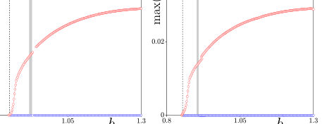
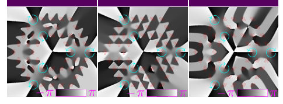
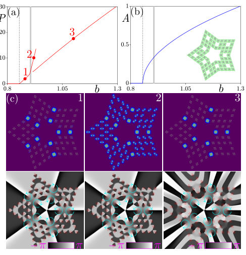
Summary. This paper investigates the stability of vortex-soliton arrays in engineered nonlinear optical lattices, specifically comparing fractal disclination structures against conventional ones. The authors prove that the unique geometry of the fractal lattice stabilizes these complex light fields, which are otherwise prone to collapse or decay. This establishes a new mechanism for controlling multi-field excitations in geometrically complex photonic systems.
Why it may be interesting. This work provides a concrete theoretical framework for designing photonic devices by showing how engineered fractal geometry can stabilize complex nonlinear excitations like vortex solitons, which is highly relevant to quantum optics and nonlinear wave physics.
Main problem. The primary challenge is achieving stable vortex solitons and vortex-soliton arrays within complex, geometrically structured nonlinear media.
Main result. The study demonstrates that vortex-soliton arrays formed in disclination-fractal lattices are robustly stable, whereas analogous arrays in conventional disclination structures are unstable.
Method. The authors employed linear stability analysis and direct numerical simulations of the nonlinear paraxial wave equation to characterize the stability of the constructed soliton arrays.
Model / system. The system models light propagation in nonlinear waveguide arrays, specifically utilizing Sierpiński carpet-derived disclination-fractal structures. The dynamics are governed by a nonlinear Schrödinger-like equation incorporating cubic nonlinearity.
Key observables. Stability of the vortex-soliton arrays (determined by the sign of the perturbation growth rate $\text{Re}(\beta)$), field mode profiles, and long-distance propagation fidelity.
Important parameters / regimes. The geometry is defined by fractal lattice parameters, and the analysis distinguishes between topologically trivial and non-trivial phases.
Assumptions / limitations. The analysis assumes the system can be modeled by the paraxial wave equation and relies on the comparison between the fractal and conventional disclination geometries.
Figures summary. Figures illustrate the construction of the fractal and disclination structures, spectral analysis showing localized states, and crucially, propagation dynamics comparing the stable maintenance of the field in the fractal lattice versus the disintegration in the conventional SSH model.
Paper structure. The paper progresses by first defining the physical model and the fractal geometry, then analyzing the linear spectrum to find domain wall states, followed by incorporating nonlinearity to find the soliton arrays, and concluding with a direct stability comparison between the fractal and conventional structures.
Vortex light fields carry orbital angular momentum and have attracted significant attention because of their wide applications in light field manipulations, optical communications, and quantum information processing. In nonlinear media, the balance between diffraction and self-action enables the formation of vortex solitons. However, achieving the stability of vortex solitons remains challenging due to radial and azimuthal modulation instabilities. Here, we report stable vortex solitons and vortex-soliton arrays in disclination-fractal configurations with different rotational symmetries, constructed by applying disclination operations to fractal lattice structures. The stable vortex-soliton arrays---composed of several vortex solitons---can exist along domain walls, resulting from the disclination operation applied to the topologically trivial phase. Their stability is verified through both linear stability analysis and direct simulations of perturbed propagation. For comparison, vortex-soliton arrays in conventional disclination configurations are found to be completely unstable, demonstrating the significance of the fractal configuration in stabilizing these nonlinear states. These findings reveal a new nonlinear excitation mechanism arising from the interplay between fractal geometry and disclination defects, thereby providing theoretical underpinnings for both the improved understanding of multi-field excitation phenomena in complex geometric systems and opening new avenues for the design of photonic devices based on fractal disclination structures.
Authors: Ken Shiozaki
Type: theory · Category: other · PDF: https://arxiv.org/pdf/2609.09723v1
Analysis basis: full PDF text, analyzed in chunks
Topic relevance: analog quantum simulation 1/5

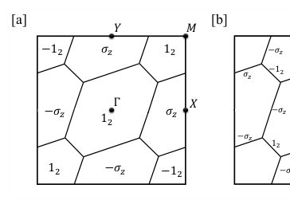
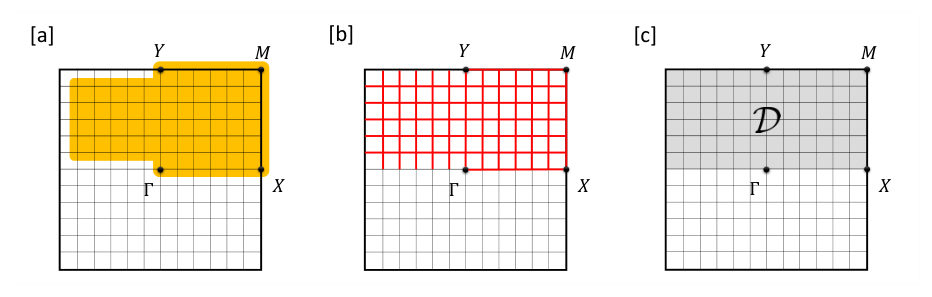
Summary. This theoretical paper introduces a discrete Stiefel-Whitney invariant to characterize the topology of 2D spinful insulators with $C_2T$ symmetry. By formulating this invariant using a real bundle over the Brillouin torus quotient, the authors provide a robust tool that distinguishes between phases missed by conventional indices. This advances the stable topological classification scheme for these quantum materials.
Why it may be interesting. While the primary focus is condensed matter topology, the rigorous mathematical machinery involving gauge theory, characteristic classes, and discrete invariants has deep connections to topological quantum field theories relevant to quantum information.
Main problem. The paper aims to derive and analyze a discrete Stiefel-Whitney invariant for two-dimensional spinful insulators possessing twofold rotation and time-reversal symmetries.
Main result. A novel discrete $\mathbb{Z}_2$ invariant, $\nu_{C_2T}[\alpha]$, is established, which is proven to be gauge-invariant and additive under direct sums, thereby refining the topological classification of these materials.
Method. The invariant is formulated using the second Stiefel-Whitney number of a real bundle over the quotient of the Brillouin torus, calculated via singular gauge transformations and overlaps of Bloch frames.
Model / system. The study focuses on two-dimensional spinful insulators characterized by $C_2T$ symmetry, specifically within the layer group $p1121'$. Examples include atomic and band insulators.
Key observables. The primary observables are the discrete topological invariants: the additional $\mathbb{Z}_2$ invariant $\nu_{C_2T}[\alpha]$, the filling number, and three quantized $\mathbb{Z}_2$ partial polarizations.
Important parameters / regimes. The classification is determined by the combination of these invariants, leading to the stable classification $\mathbb{Z} \oplus \mathbb{Z} \oplus \mathbb{Z}_4^2$.
Assumptions / limitations. The derivation assumes the existence of an energy gap $\Delta E > 0$ separating occupied bands from others.
Figures summary. The notes mention Table 1 summarizing indices for the BI example, and Table 2 comparing computed values of the invariant $\nu_{C_2, \text{dis}}^2[\alpha]$ for various insulator models.
Paper structure. The paper systematically reviews existing SW invariants, derives the discrete formula for the new invariant using Bloch frame overlaps, proves its invariance and additivity, and finally applies it to distinguish between different topological phases.
We review Stiefel--Whitney invariants and give a discrete formulation of an additional $\mathbb{Z}_2$ invariant for two-dimensional spinful insulators with twofold rotation and time-reversal symmetries (layer group $p1121'$). A singular gauge transformation specifies a real bundle over the quotient of the Brillouin torus, whose second Stiefel--Whitney number defines the invariant. We derive its dependence on the choice of auxiliary gauge function and prove invariance under changes of Bloch frame and additivity under direct sums. The discrete formula uses overlaps of independently chosen Bloch frames and symmetry-compatible $\mathrm{Pin}_+$ lifts on the boundary of a half Brillouin zone. Atomic and topological-insulator models illustrate the formula and distinguish the additional invariant from the Kane--Mele index. Together with three quantized $\mathbb{Z}_2$ partial polarizations and the filling number, it labels the known stable classification $\mathbb{Z}\oplus\mathbb{Z}_2^{\oplus 4}$.
Authors: Somayyeh Alidoust, V. Ongun Özçelik
Type: theory · Category: other · PDF: https://arxiv.org/pdf/2609.09566v1
Analysis basis: full PDF text, analyzed in chunks
Topic relevance: Keldysh / 2PI / non-Gaussian methods 1/5
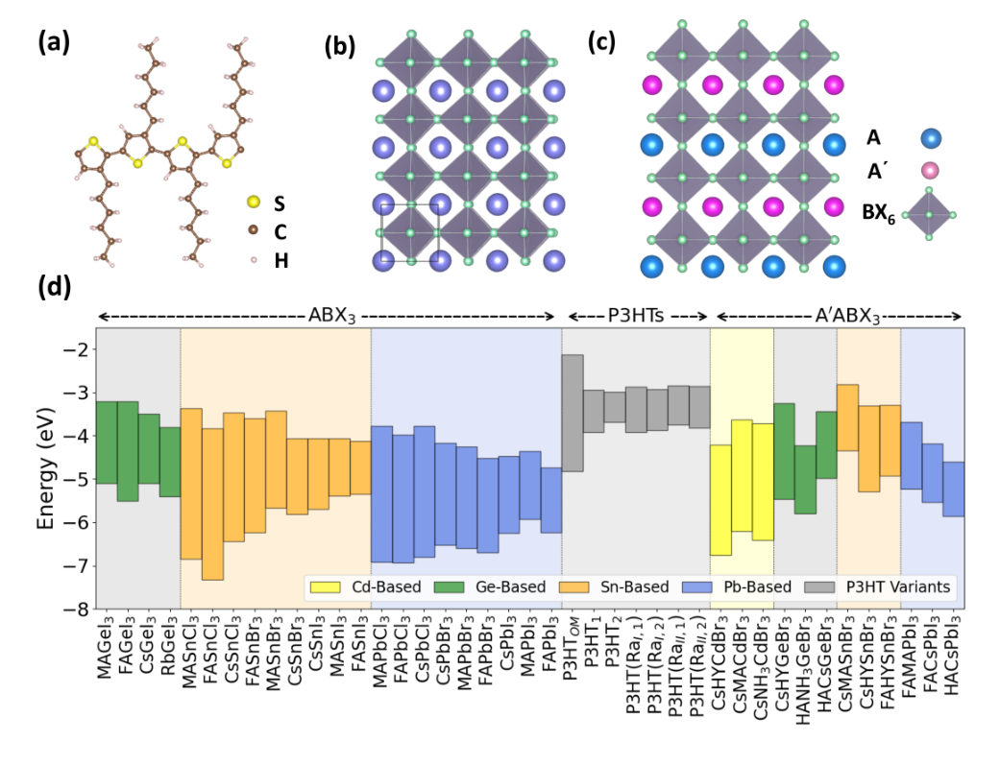
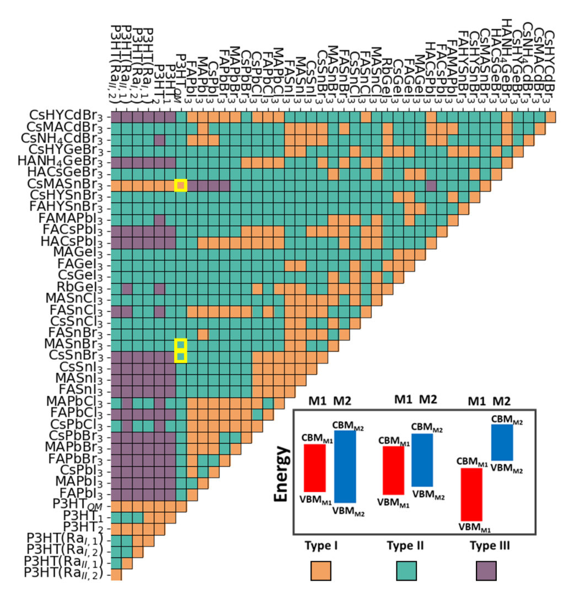
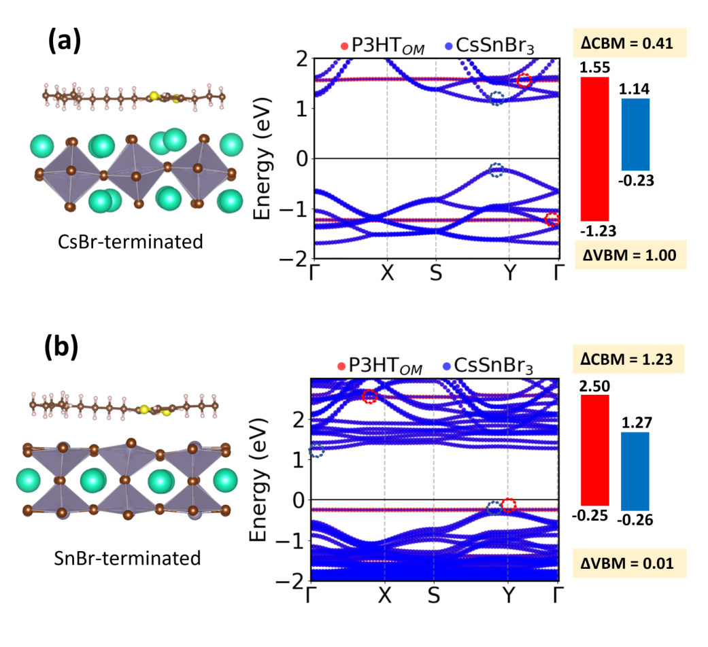

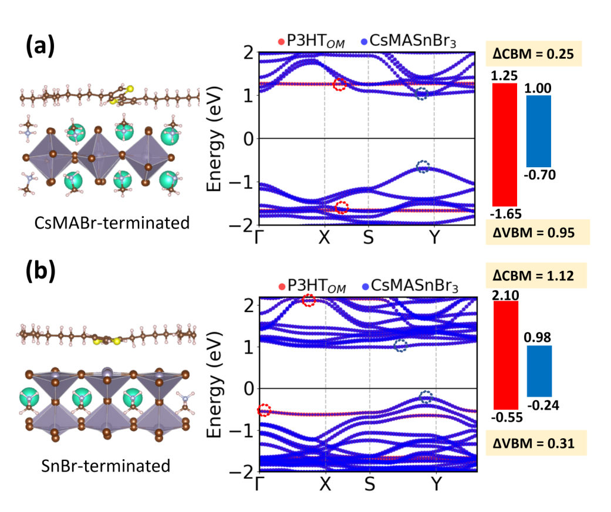
Summary. This theoretical study uses first-principles calculations to map out how composition and surface termination dictate the band alignment in P3HT/perovskite interfaces. The key finding is that cation mixing in the perovskite structure can stabilize a desirable Type-I junction, and surface termination provides a powerful, tunable knob to engineer carrier confinement for optoelectronic applications.
Why it may be interesting. Although focused on solid-state photovoltaics, the detailed, first-principles modeling of interfacial electronic structure, band alignment, and charge confinement mechanisms is highly relevant to understanding energy transfer in quantum materials and open quantum systems.
Main problem. The study aims to understand how the chemical composition and the specific surface termination of metal halide perovskites influence the band alignment at the interface with P3HT organic semiconductors.
Main result. The research found that while most perovskites exhibit Type-II or Type-III band alignments, the mixed-cation $ ext{CsMASnBr}_3$ uniquely forms a Type-I junction, and surface termination can significantly alter the resulting carrier confinement even when charge transfer is negligible.
Method. The work relies on high-throughput first-principles calculations, specifically using DFT with advanced functionals like HSE06 and incorporating DFT-D3 corrections for van der Waals interactions.
Model / system. The system modeled is the heterojunction formed between poly(3-hexylthiophene) (P3HT) variants and various tin-based metal halide perovskites ($ ext{ABX}_3$ and $ ext{AA}' ext{BX}_3$). The calculations systematically vary the perovskite composition and the nature of the surface termination ($ ext{AX}$ vs. $ ext{BX}$).
Key observables. Band alignment type (Type-I, II, III), band edge positions ($ ext{VBM}$ and $ ext{CBM}$), band offsets ($\Delta ext{CBM}$, $\Delta ext{VBM}$), and carrier confinement strength.
Important parameters / regimes. Composition of the perovskite (e.g., $ ext{CsSnBr}_3$ vs. $ ext{CsMASnBr}_3$), surface termination ($ ext{AX}$ vs. $ ext{BX}$), and the polymer structure ($ ext{P3HT}$ variants).
Assumptions / limitations. The primary assumption is that the electronic properties are governed by band offsets and orbital coupling rather than significant net charge transfer, which is confirmed by Bader charge analysis.
Figures summary. Figure 1 compares crystal structures and band edges. Figure 2 is a heatmap summarizing the band-alignment types across 820 heterostructures. Figure 5 details the band alignments and structures for the $ ext{CsMASnBr}_3/ ext{P3HTOM}$ interface under different termination conditions.
Paper structure. The paper systematically analyzes the influence of composition (comparing pure vs. mixed-cation perovskites) and then details the effect of surface termination on the calculated band alignments, establishing design principles for interface engineering.
Hybrid organic-inorganic perovskite heterostructures are emerging platforms for energy conversion and optoelectronic devices, yet the effects of composition and surface terminations on band alignment remain poorly understood. Here, using high-throughput first-principles calculations, we systematically reveal the effect of composition and surface termination on the band alignment of 820 heterostructures formed between poly(3-hexylthiophene) (P3HT) variants and conventional and mixed-cation metal halide perovskites. Band edge analysis predicts concentration dependent band alignments, with most Pb and Sn based perovskites exhibiting Type II and III behavior while mixed-cation CsMASnBr3 uniquely forms Type-I junctions with all P3HT variants. Explicit interface calculations reveal that surface termination can reverse the predicted alignment in conventional tin perovskites, while the mixed cation perovskite preserves Type-I alignment with P3HT regardless of termination. Despite negligible charge transfer, termination dependent band offsets produce markedly different carrier confinement, establishing design principles for engineering P3HT/perovskite interfaces.
Authors: Yeonhee Lee, Seungsang Cha, Yuna Kwak, Nicholas Juntunen, Grant M. Rotskoff, Jwa-Min Nam
Type: both · Category: statistical mechanics · PDF: https://arxiv.org/pdf/2609.09761v1
Analysis basis: full PDF text, analyzed in chunks
Topic relevance: Frenkel-Kontorova 1/5
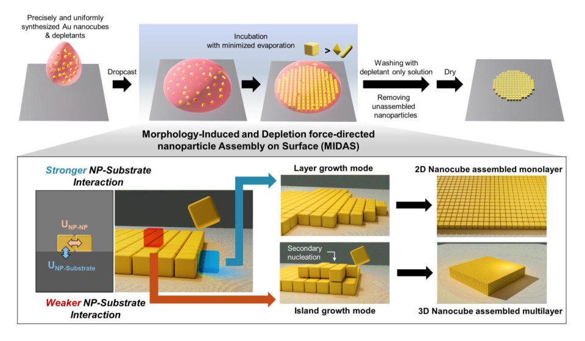

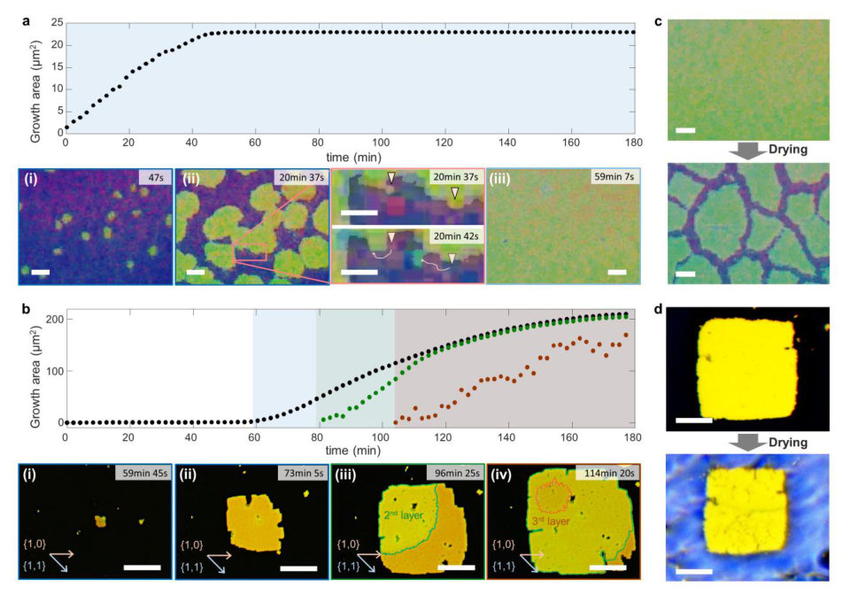

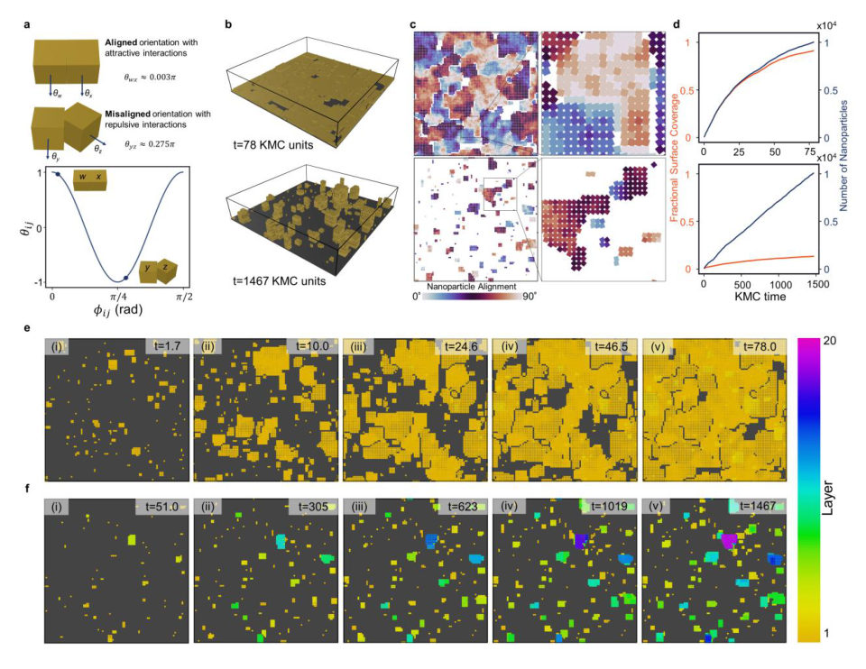
Summary. This paper introduces the MIDAS method for controlling the self-assembly of gold nanocubes on surfaces using depletion forces. By tuning substrate properties, the authors demonstrate precise control over the resulting structure, forming either 2D monolayers or 3D multilayers. This work establishes a generalizable mechanism for building complex nanoparticle architectures at scale.
Why it may be interesting. The work provides a detailed physical mechanism—depletion forces—that dictates the macroscopic organization of nanoscale matter, which has parallels in understanding phase transitions and ordering in complex soft matter systems.
Main problem. The primary challenge is achieving precise, controllable, and scalable self-assembly of nanoparticles into functional structures, overcoming limitations in current methods.
Main result. The MIDAS method successfully enables the selective formation of 2D and 3D nanoparticle monolayers by controlling the interplay between morphology-sensitive depletion forces and substrate interactions.
Method. The study combines experimental techniques (TEM, SAXS, AFM, UV-Vis-NIR spectroscopy) with theoretical modeling, including Lattice-gas modeling and Kinetic Monte Carlo simulations.
Model / system. The system involves gold nanocubes (AuNCs) self-assembling on various substrates (Si, borosilicate glass) driven by depletion forces generated by surfactant micelles (BDAC). The assembly mode is controlled by the relative strengths of nanoparticle-substrate versus nanoparticle-nanoparticle interactions.
Key observables. Assembly mode (2D monolayer vs. 3D multilayer), interparticle spacing (lattice constant), and optical resonance peaks (UV-Vis-NIR spectra).
Important parameters / regimes. Substrate roughness ($ ext{Sa}$), depletion potential ($U_{dep}$), and the relative strengths of electrostatic and van der Waals forces.
Assumptions / limitations. The assembly process is governed by the balance of multiple forces (depletion, electrostatic, van der Waals), and the 3D optical spectrum can be calculated by weighting layer spectra based on surface coverage.
Figures summary. Figures illustrate structural characterization (2D/3D AuNAMs) and show the dependence of assembly on surface roughness and surfactant concentration, alongside optical spectra.
Paper structure. The paper establishes the MIDAS method, details the physical forces governing assembly, presents experimental results showing control over 2D/3D structures via substrate tuning, and supports these findings with detailed simulations and modeling.
Self-assembling nanoparticles is a highly efficient and facile way to form functional nano-, micro- and macrostructures. However, currently available methods lack precision and controllability in size, shape and composition, suffer from poor reproducibility and scalability, and require complex steps and expensive materials. Here, we present the uniform morphology-induced and depletion force-directed nanoparticle assembly on surface (MIDAS) method with gold nanocubes (AuNCs). Using this approach, morphology-sensitive depletion forces trigger shape-selective flocculation and assembly of the AuNCs with uniform size and shape. Importantly, the surface roughness-controlled substrate drives the large-scale formation of AuNC-assembled monolayers (2D AuNAMs) or three-dimensional AuNC-assembled multilayers (3D AuNAMs) in a highly specific manner without any complex ligand modification or preparation steps. Lattice-gas modeling and kinetic Monte Carlo simulations show the depletion force is the key parameter determining supercrystal morphology and corroborate the experimental findings. This work establishes a generalizable nanoparticle assembly mechanism and demonstrates the broad applicability of the MIDAS strategy for scalable fabrication and patterning of 2D and 3D nanoparticle architectures.
Authors: Anmol Lamichhane, Adam Denchfield, Hyeondeok Shin, Panchapakesan Ganesh, Russell J. Hemley, Hyowon Park
Type: theory · Category: strongly correlated electrons · PDF: https://arxiv.org/pdf/2609.09446v1
Analysis basis: full PDF text, analyzed in chunks
Topic relevance: Keldysh / 2PI / non-Gaussian methods 1/5

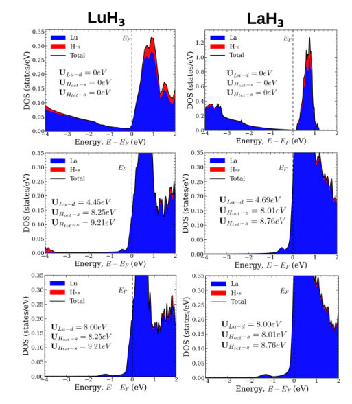
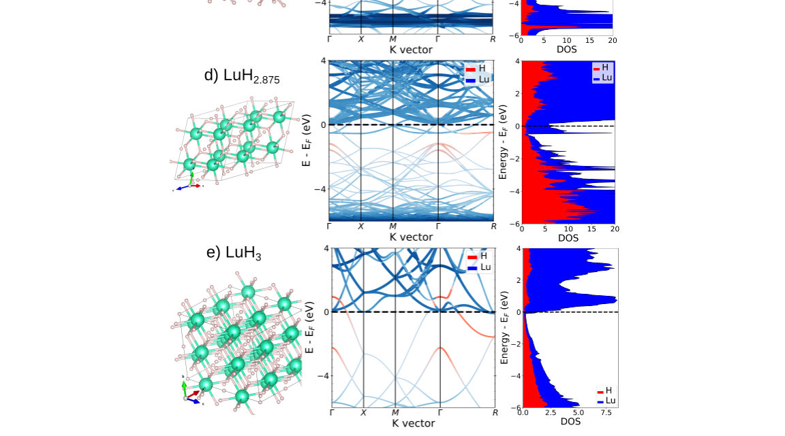
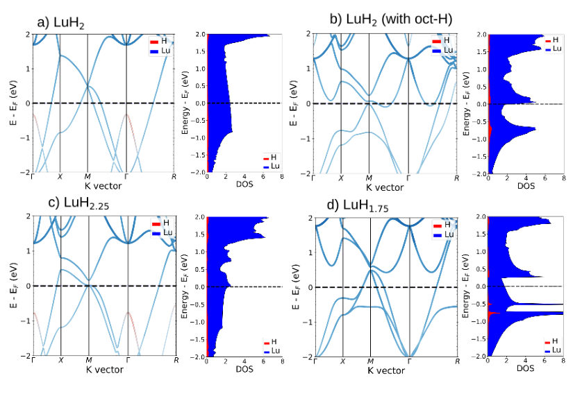
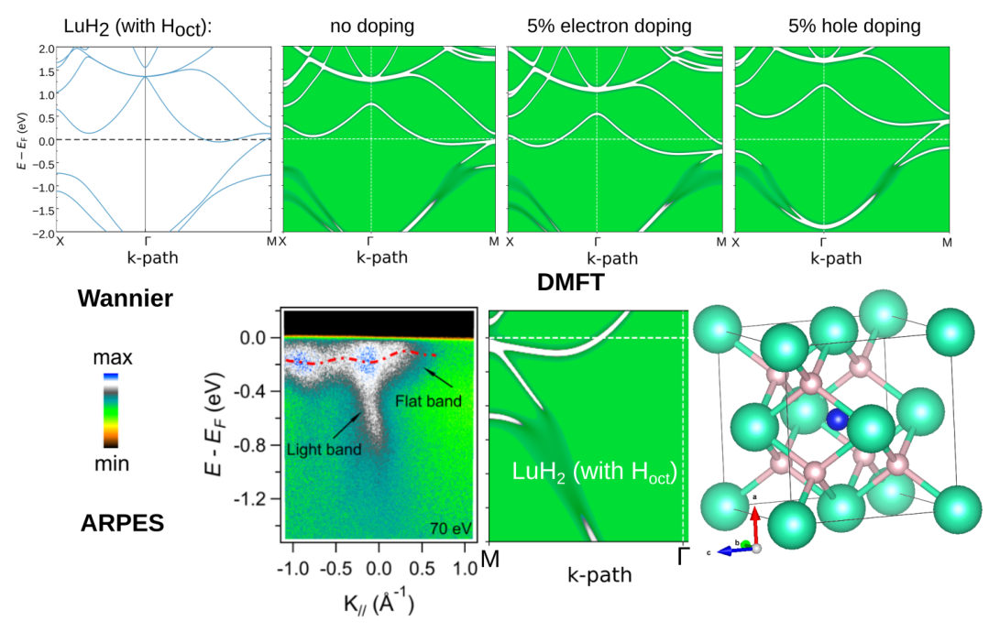
Summary. This theoretical study investigates the electronic structure of superconducting Lutetium hydrides using advanced many-body techniques. The authors find that the puzzling flat bands and correlation effects are not solely due to strong electron-electron interactions, but are fundamentally controlled by the local filling of hydrogen orbitals, particularly at defect sites. This establishes orbital filling as the key organizing principle for superconductivity in this material class.
Why it may be interesting. The work provides a detailed, first-principles understanding of how structural defects and orbital filling dictate emergent electronic phenomena like flat bands and superconductivity in strongly correlated materials, which is highly relevant to modern condensed matter theory.
Main problem. The study aims to determine the microscopic origin and correlation nature of puzzling flat-band regions observed in superconducting Lutetium hydrides ($ ext{LuH}_x$) and identify the fundamental principle governing their electronic behavior.
Main result. The flat-band features and correlation strength are fundamentally governed by the local hydrogen orbital filling at specific sites (especially anti-site defects), rather than the magnitude of the on-site Coulomb interaction itself.
Method. The research employs a combination of Density Functional Theory (DFT), Dynamical Mean-Field Theory (DMFT), and the Constrained Random-Phase Approximation (cRPA) to model electronic structure and correlation effects.
Model / system. The system under investigation is the series of Lutetium hydrides ($ ext{LuH}_x$, $1.75 \le x \le 3$), which are superconducting materials whose electronic properties are governed by the hybridization between $ ext{Lu-}d$ and $ ext{H-}s$ states.
Key observables. Screened on-site Coulomb interaction, correlation strength (mass enhancement, local susceptibility), electronic structure (flat bands, DOS), and orbital occupations ($ ext{H-s}$ vs $ ext{Lu-d}$).
Important parameters / regimes. Hydrogen orbital filling, octahedral vs tetrahedral site occupancy, and the correlation strength parameter $U$.
Assumptions / limitations. The analysis assumes that the electronic properties are dictated by the local orbital filling geometry, and that the system remains weakly correlated despite large interaction parameters.
Figures summary. Figures illustrate model structures, orbital-resolved Density of States (DOS) under varying correlation treatments, and dielectric functions showing the modification of plasma edges due to octahedral hydrogen occupancy.
Paper structure. The paper systematically analyzes the electronic structure by first establishing the theoretical framework (DFT/DMFT/cRPA), then calculating correlation diagnostics for different stoichiometries, identifying the role of anti-site defects, and finally concluding that orbital filling is the primary organizing principle.
Lutetium hydrides (LuH$_x$, $1.75 \leq x \leq 3$) form a diverse series of phases, several of which superconduct under pressure. Characterizing their electronic properties has remained challenging owing to a high propensity for hydrogen defect formation, and recent angle-resolved photoemission (ARPES) measurements reveal puzzling flat-band regions that position these materials as candidates where superconductivity and flat-band physics may intersect. Here, by combining density functional theory, dynamical mean-field theory, and the constrained random-phase approximation, we uncover the microscopic origin and correlation nature of these flat bands. Across all compositions, the screened on-site Coulomb interaction is larger for H-s states than for Lu-$d$ states due to compact hydrogen orbitals. Nevertheless, these systems remain weakly correlated metals: the nearly filled H-$s$ shell admits little charge fluctuation, so its large interaction acts as a static level shift rather than a source of correlation. Although hydrogen primarily occupies tetrahedral sites at $x=2$, we discover that anti-site defects--where hydrogens occupy slightly unfavorable octahedral sites--generate both the ARPES flat-band features and the low-energy optical absorption peak, attesting to the usual defective nature of such materials in experimental samples. We further find that correlation strength is governed primarily by hydrogen orbital filling at these sites rather than the interaction magnitude itself. Consequently, we identify hydrogen orbital filling as the fundamental organizing principle dictating correlation and low-energy flat-band physics in lutetium hydrides.
Authors: Sabry G. Moustafa, Andrew J. Schultz
Type: theory · Category: disordered systems and neural networks · PDF: https://arxiv.org/pdf/2609.09532v1
Analysis basis: full PDF text, analyzed in chunks


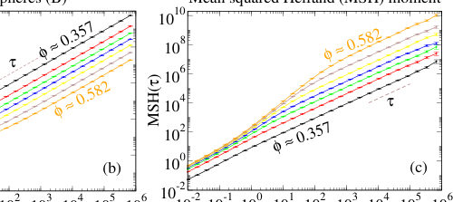


Summary. This work presents an extensive molecular dynamics study of a dense binary hard-sphere fluid to characterize its dynamical properties near the glass transition. The researchers find that transport coefficients exhibit super-Arrhenius behavior and that dynamic heterogeneity is present, characterized by a unique spatial decay scaling. The findings establish a detailed benchmark dataset for theoretical models studying glassy dynamics in disordered matter.
Why it may be interesting. The detailed analysis of dynamic heterogeneity using $\chi_4( au)$ and the identification of non-conventional scaling laws ($\lambda \sim au^{1/3}$) provide rigorous benchmarks for theoretical models attempting to describe glassy dynamics in dense, disordered systems.
Main problem. The study investigates the dynamical properties and the emergence of dynamic heterogeneity in a dense hard-sphere mixture, particularly near the glass transition.
Main result. The system exhibits super-Arrhenius behavior for transport coefficients, the Stokes-Einstein relation breaks down, and dynamic heterogeneity is characterized by a spatial decay length scaling as $\lambda \sim au^{1/3}$ rather than the conventional $ au^{1/2}$.
Method. Molecular Dynamics (MD) simulations are employed to calculate transport coefficients and analyze higher-order correlation functions, including the four-point dynamic susceptibility ($\chi_4( au)$).
Model / system. The model is a three-dimensional binary hard-sphere (BHS) fluid mixture, studied over a range of packing fractions ($\phi \approx 0.357-0.582$).
Key observables. Self-diffusivity ($D$), shear viscosity ($\eta$), structural relaxation time ($ au_\alpha$), non-Gaussian parameter ($\alpha_{2,s}( au)$), and four-point dynamic susceptibility ($\chi_4( au)$).
Important parameters / regimes. Packing fraction ($\phi$), system size ($N$), and time ($ au$).
Assumptions / limitations. The analysis involves extrapolating data to the thermodynamic limit ($N o \infty$), though the authors caution that simple exponential fits are insufficient for reliably estimating the critical packing fraction ($\phi_0$).
Figures summary. The figures summarize the finite-size effects on time-dependent $D( au)$ and $\eta( au)$, the evolution of $\alpha_2( au)$ and $\chi_4( au)$ with system size, and the monotonic increase of the compressibility factor $Z_\infty(\phi)$ with $\phi$.
Paper structure. The paper systematically analyzes transport coefficients, finite-size scaling of these coefficients, and then progresses to higher-order measures like $\chi_4( au)$ to quantify dynamic heterogeneity.
We present an extensive molecular dynamics (MD) study of the dynamical properties of a binary hard-sphere fluid over a wide range of packing fractions, $φ\approx 0.357-0.582$. The self-diffusivity, $D$, and shear viscosity, $η$, are computed using an efficient implementation of the Einstein--Helfand method. The finite-size effects in $D$ scale as $1/N^α$, with $α$ increasing from approximately $1/3$ to $3/4$ with increasing $φ$, whereas those in $η$ are negligible except for $φ\gtrsim 0.554$, where they scale as $1/N$. The data are then extrapolated to the thermodynamic limit to obtain $D_{\infty}$ and $η_{\infty}$. Both coefficients show a super-Arrhenius dependence on $φ$ for dense states, accompanied by a breakdown of the Stokes--Einstein relation. Although both $D_{\infty}(φ)$ and $η_{\infty}(φ)$ data are well described by an exponential form, we demonstrate that these fits do not provide reliable estimates of the critical packing fraction, $φ_0$, owing to the substantial extrapolation required beyond the accessible equilibrium range. We find the commonly assumed proportionality between $η$ and the structural relaxation time, $τ_α$ , to not hold for this system. For $φ\gtrsim 0.570$, the van Hove self-correlation function $G_s(r, τ)$ exhibits a spatial exponential decay at intermediate times, $τ$, signaling dynamic heterogeneity. The characteristic decay length scales as $λ\sim τ^ν$, with $ν\approx 1/3$, in contrast to the conventional square-root scaling. We also investigate temporal heterogeneity through the four-point dynamic susceptibility, $χ_4(τ)$, and its peak time, $τ_4$. These findings provide rigorous benchmark MD data for computational studies of glassy dynamics and establish a reference for testing theoretical models in dense disordered systems.
Authors: M. Selch
Type: theory · Category: other · PDF: https://arxiv.org/pdf/2609.09505v1
Analysis basis: full PDF text, analyzed in chunks
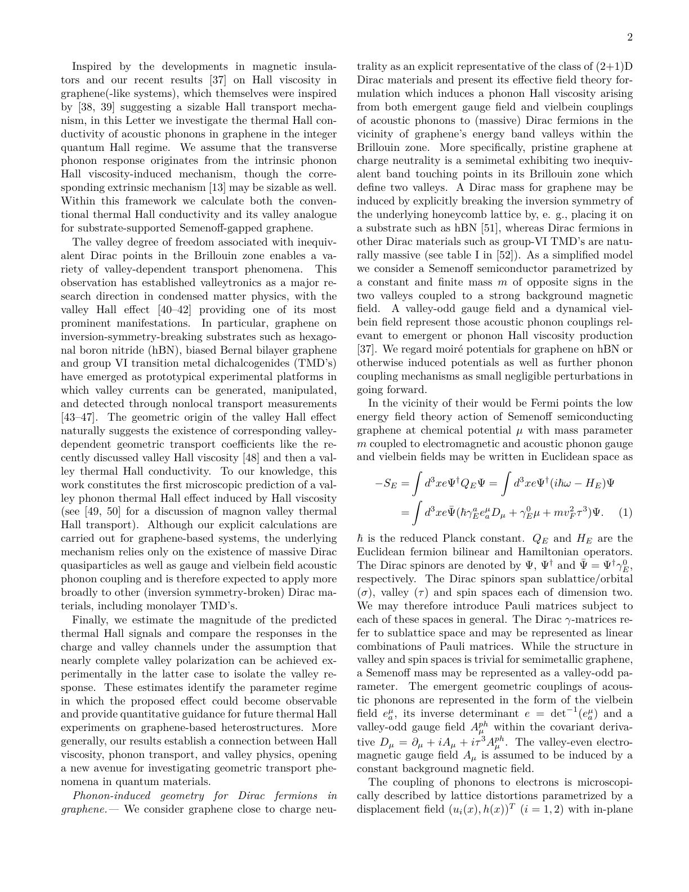

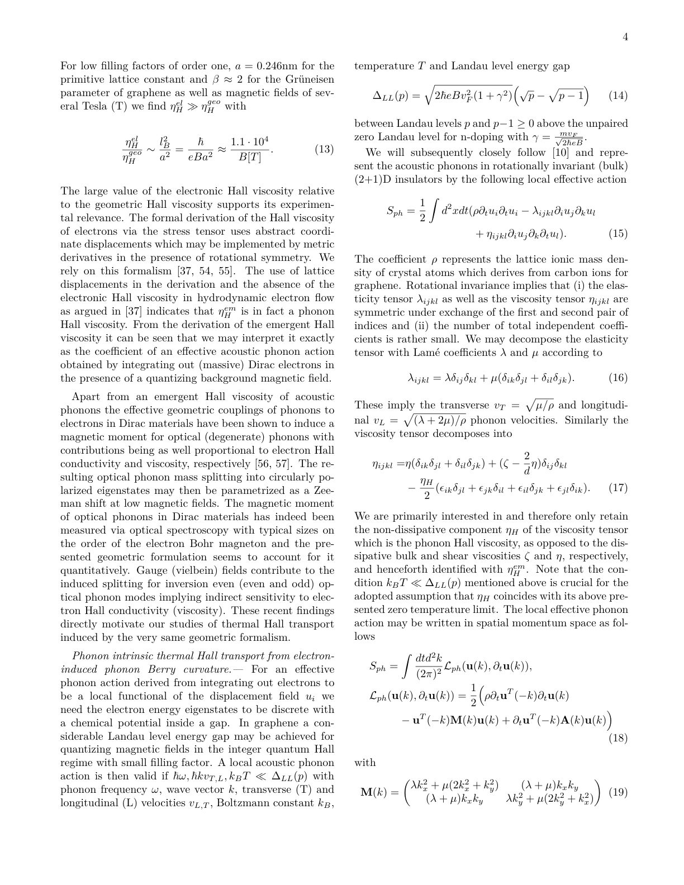
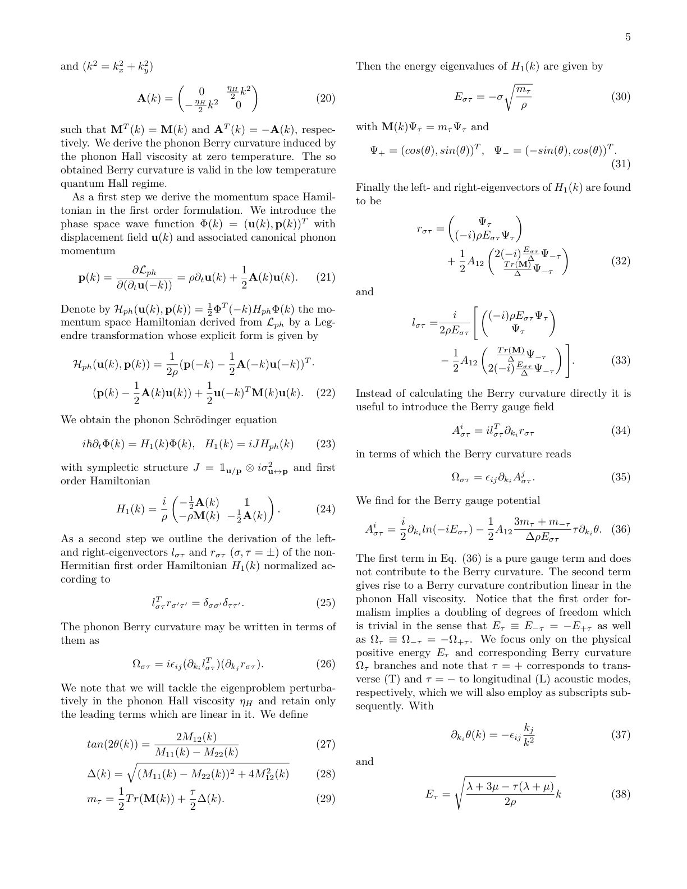

Summary. This paper theoretically calculates the intrinsic thermal Hall conductivity of phonons in graphene operating in the quantum Hall regime. It shows that while the intrinsic phonon contribution is small, the valley-dependent phonon thermal Hall effect is predicted to be significant. The methodology relies on coupling electron Hall physics to lattice vibrations via emergent Hall viscosities.
Why it may be interesting. The work connects topological concepts (Hall viscosity, Berry curvature) from electronic transport to lattice vibrations (phonons), providing a mechanism to study valley physics in thermal transport, which is relevant to understanding emergent quantum phenomena in condensed matter.
Main problem. Calculating the intrinsic (valley) thermal Hall conductivity of phonons in graphene when bulk electron thermal transport is suppressed in the quantum Hall regime.
Main result. The intrinsic phonon thermal Hall transport is predicted to be very small compared to electron transport, but the valley thermal Hall transport is predicted to be comparable in size to the charge channel transport for Dirac materials.
Method. The calculation uses a theoretical framework involving the phonon Berry curvature and the concept of phonon Hall viscosity, derived from geometric electron-phonon coupling.
Model / system. The system is graphene modeled in the quantum Hall regime, treated as a Semenoff semiconductor. The analysis involves coupling acoustic phonons to Dirac fermions via lattice distortions.
Key observables. Phonon thermal Hall conductivity ($\kappa_{ph}^H$), Valley thermal Hall conductivity ($\kappa_{ph}^vH$), and Phonon Hall viscosity ($\eta_{ ext{em}}^H$).
Important parameters / regimes. Quantum Hall regime, low temperature limit ($T \ll T_{ ext{Debye}}$), and the valley degree of freedom.
Assumptions / limitations. The analysis assumes the transverse phonon response originates from the intrinsic phonon Hall viscosity-induced mechanism and that graphene can be approximated by pristine graphene.
Paper structure. The paper progresses by first establishing the theoretical link between phonon Hall viscosity and thermal transport, then deriving the phonon Berry curvature, and finally calculating the thermal Hall conductivity in the low-temperature and quantum Hall limits.
We calculate the intrinsic contribution to the (valley) thermal Hall conductivity of phonons in (Semenoff-gapped) graphene in the quantum Hall regime where bulk electron thermal transport is suppressed. The (valley) thermal Hall transport of phonons considered here originates from a phonon (valley) Hall viscosity induced by electron (valley) Hall conductivity and viscosity via geometric electron-phonon coupling. The so generated phonon (valley) Hall viscosity is identified with the emergent (valley) Hall viscosity recently introduced in \textit{Phys. Lett. A} \textbf{595}, 132096 (2026). While our calculations refer to graphene, they may very well be generalized to other Dirac materials like group-VI transition metal dichalcogenides. We discuss the prospect of measuring the phonon thermal Hall conductivity in graphene-based heterostructures and estimate the corresponding valley response induced by electrons in the inversion symmetry broken phase.
Authors: Lerato Takana, Katya Mikhailova, Junwei Tong, Xiangcheng Liu, Kwangyul Hu, Juan Hofer, Guanxiong Qu, Clare Yu, Ivan Schuller, Michael Flatté, Xiaoqin Li, Yuri Suzuki
Type: both · Category: other · PDF: https://arxiv.org/pdf/2609.09674v1
Analysis basis: full PDF text, analyzed in chunks


Summary. This research investigates how heat drives spin transport via magnons in ferrimagnetic thin films using nonlocal measurements. By combining experiments (BLS, thermal imaging) and simulations, the authors show that transport is controlled not just by the number of magnons, but critically by the magnon group velocity and the temperature dependence of the exchange stiffness. This establishes key parameters for engineering heat-driven spin currents.
Why it may be interesting. The work provides a detailed, microscopic link between macroscopic thermal transport measurements and fundamental magnetic parameters (like exchange stiffness and magnon dispersion), which is relevant for understanding energy transport in quantum magnetic materials.
Main problem. The paper aims to establish a microscopic understanding of thermal magnon transport in magnetic insulators, moving beyond simple descriptions based only on the magnon population.
Main result. Thermal magnon transport is governed by microscopic parameters like magnon group velocity and temperature-dependent exchange stiffness, showing suppression by magnetic fields and temperature despite increasing magnon density.
Method. The study combines non-local spin Seebeck measurements in nanodevices with Brillouin light scattering (BLS) spectroscopy and micromagnetic simulations.
Model / system. The physical system is low-damping ferrimagnetic thin films, specifically Li0.5Al1.0Fe1.5O4/Pt nanodevices. The analysis utilizes nonlocal spin Seebeck geometry to isolate intrinsic magnon transport signals.
Key observables. Thermal magnon voltage (Vth), magnon spin diffusion length, magnon group velocity (vg), and the temperature dependence of the transport signal.
Important parameters / regimes. Magnetic field strength (H), temperature (T), and the temperature-dependent exchange stiffness (A_ex(T)).
Assumptions / limitations. The nonlocal geometry successfully separates intrinsic magnon transport from local thermoelectric effects, and that phonon-drag/interfacial contributions are negligible above 100 K for temperature analysis.
Figures summary. Figures demonstrate the nonlocal voltage scaling with temperature gradient, the suppression of Vth and diffusion length with magnetic field (linked to reduced vg), and the monotonic decrease of Vth with increasing temperature, which simulations reproduce using T-dependent exchange stiffness.
Paper structure. The paper progresses by first establishing the experimental platform (nonlocal geometry) to measure the thermal signal. It then investigates the magnetic field dependence, linking suppression to reduced magnon group velocity via BLS. Finally, it analyzes the temperature dependence, showing that the decrease in transport is due to temperature-dependent exchange stiffness, which is confirmed by simulations.
Thermally generated magnons enable heat-driven spin transport in magnetic insulators, yet the microscopic mechanisms governing their propagation remain poorly understood. Here, we investigate thermal magnon transport in low-damping Li$_{0.5}$Al$_{1.0}$Fe$_{1.5}$O$_4$/Pt nanodevices using a nonlocal spin Seebeck geometry that separates magnon transport from local thermoelectric effects. Thermal imaging establishes a detector region outside the thermal healing length, enabling intrinsic nonlocal measurements. We find that thermal magnon transport is strongly suppressed by magnetic fields far above saturation. Brillouin light scattering reveals that increasing field reduces the group velocity of backward volume magnons, providing a microscopic origin for the observed reduction in magnon spin diffusion length. We further find that thermal magnon transport decreases with increasing temperature despite an increasing magnon population. Micromagnetic simulations reproduce this behavior only when a temperature-dependent exchange stiffness is included. These results identify magnon group velocity and exchange stiffness as key parameters governing thermal magnon transport in ferrimagnetic thin films.
Authors: Yingnan Liu, Yan Liu, Renyu Duan, Menghui Wang, Meiling Xu, Hanyu Liu, Shoutao Zhang
Type: theory · Category: other · PDF: https://arxiv.org/pdf/2609.09730v1
Analysis basis: full PDF text, analyzed in chunks
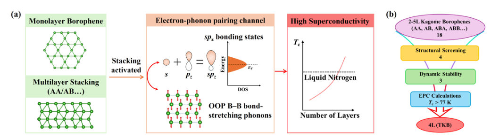
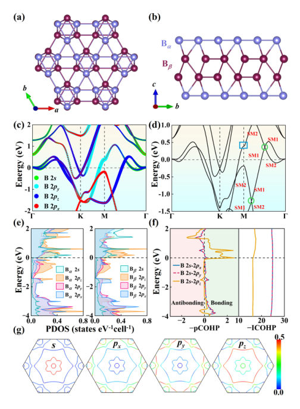
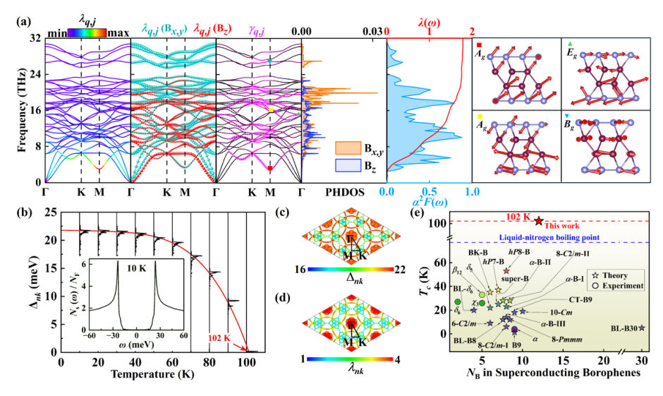
Summary. This theoretical study predicts that tetralayer kagome borophene (TKB) is a record-breaking elemental superconductor with a critical temperature of 102 K. The high $T_c$ is attributed to a novel, stacking-activated pairing mechanism involving out-of-plane $s$-$p_z$ bonding states coupled to low-frequency lattice vibrations. This work establishes covalent stacking engineering as a promising route for designing high-$T_c$ 2D materials.
Why it may be interesting. While focused on superconductivity, the detailed analysis of orbital-selective coupling and lattice vibrations (phonons) provides a rich model for understanding electron-phonon interactions in low-dimensional systems, which has parallels in strongly correlated electron physics.
Main problem. The primary challenge is achieving high-temperature superconductivity in two-dimensional elemental crystals, where insufficient electron-phonon coupling (EPC) often limits $T_c$ below liquid-nitrogen temperatures.
Main result. The authors predict that tetralayer kagome borophene (TKB) can be a record-high-$T_c$ elemental superconductor with a critical temperature of 102 K.
Method. The study employs first-principles calculations combined with fully anisotropic Migdal-Eliashberg theory to model the superconducting pairing mechanism.
Model / system. The system analyzed is ABAB-stacked Tetralayer Kagome Borophene (TKB). The theory focuses on the electron-phonon coupling mediated by out-of-plane (OOP) $s$-$p_z$ bonding states coupled to low-frequency OOP boron vibrations.
Key observables. Predicted critical temperature ($T_c$) of 102 K; strong total EPC strength ($\lambda = 1.78$); pronounced anisotropy in the superconducting gap ($\Delta_{nk}$).
Important parameters / regimes. The optimal structure is the tetralayer configuration; the pairing mechanism relies on low-frequency OOP vibrations; the study notes the necessity of exfoliation for intrinsic measurements.
Assumptions / limitations. The analysis relies on theoretical predictions from first-principles calculations, and the mechanism hinges on the unique OOP pairing channel activated by the specific ABAB stacking.
Figures summary. Figures illustrate the schematic of the OOP pairing mechanism, the screening workflow for borophenes, the TKB structure with orbital-resolved band structures, and momentum-resolved plots showing the superconducting gap and EPC strength.
Paper structure. The paper first establishes the problem of high-$T_c$ in 2D elements, then details the theoretical framework using first-principles calculations and Migdal-Eliashberg theory. It presents the TKB structure and its unique OOP pairing mechanism, culminating in the prediction of the record-high $T_c$ and discussing the implications of stacking engineering.
Superconductivity above the liquid-nitrogen temperature remains rare in two-dimensional elemental crystals, where strong covalent bonding often yields high phonon frequencies but insufficient electron-phonon coupling. Here, using first-principles calculations and fully anisotropic Migdal-Eliashberg theory, we predict tetralayer kagome borophene (TKB) stabilized by ABAB covalent stacking, as a liquid-nitrogen-temperature elemental superconductor. With a predicted critical temperature of 102 K, TKB sets a record-high value among previously reported elemental superconductors. Unlike known high-Tc boron-based superconductors dominated by in-plane sigma-bonding states and high-frequency in-plane B-B stretching modes, TKB realizes an out-of-plane s-pz-bonding-mediated pairing mechanism, in which interlayer s-pz bonding states at the Fermi level are strongly coupled to low-frequency out-of-plane vibrations of boron atoms. These results reveal a distinct out-of-plane pairing channel in multilayer borophene and establish covalent stacking engineering as a potential route for high-Tc superconductivity in two-dimensional materials.
Authors: Zhuocheng Lu, Zhichao Guo, Yuanyuan Xua, Jiacheng Yao, Hua Wang
Type: theory · Category: other · PDF: https://arxiv.org/pdf/2609.10411v1
Analysis basis: full PDF text, analyzed in chunks
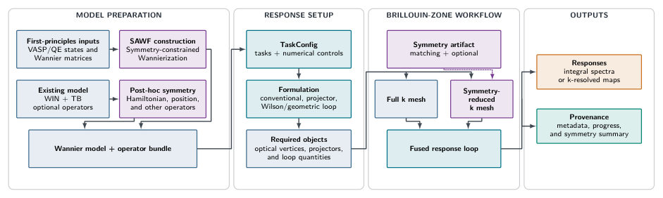
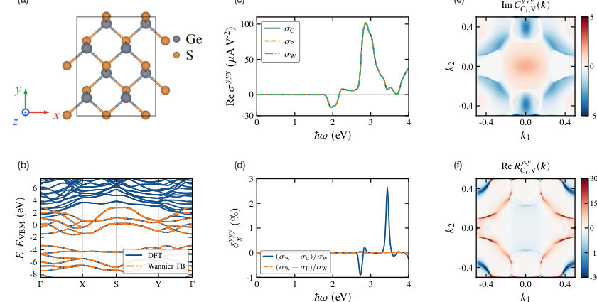


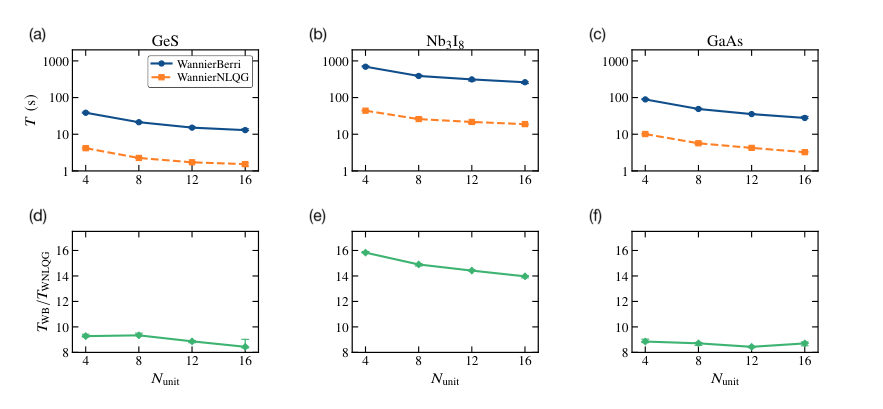
Summary. This paper presents WannierNLQG, a new Julia package designed to compute nonlinear optical responses and quantum geometric quantities from Wannier tight-binding models. It provides a unified, gauge-consistent framework to calculate complex observables like shift and photon-drag currents, while also analyzing geometric properties like Berry curvature. This tool enables first-principles modeling of optoelectronic and spintronic phenomena in advanced materials.
Why it may be interesting. The focus on nonlinear optical responses and quantum geometry connects directly to advanced topics in quantum optics and the study of open quantum systems, particularly in engineered materials.
Main problem. The core problem is understanding the deep interplay between nonlinear optical responses and quantum geometric properties in condensed matter systems.
Main result. The authors introduce WannierNLQG, a Julia framework capable of calculating these complex quantities, achieving significant computational speedups over existing methods.
Method. The framework uses Wannier tight-binding models to calculate nonlinear currents (injection, shift, photon-drag) and geometric tensors (Berry curvature, quantum metric) via gauge-consistent, degeneracy-aware methods.
Model / system. The calculations are performed on quantum materials modeled using Wannier tight-binding representations, allowing for extensions to various physical phenomena like moire bilayers and ferroics.
Key observables. Nonlinear optical responses (e.g., shift/injection currents), k-resolved Berry curvature, quantum metric, and higher-order geometric tensors.
Important parameters / regimes. Arbitrary orders of perturbation, finite momentum (q), and symmetry group representations.
Assumptions / limitations. The framework assumes the validity of Wannier interpolation from first-principles electronic structures and handles degeneracies through specialized formulations (e.g., generalized Wilson loop).
Figures summary. The notes do not provide a detailed figure summary, but mention workflow diagrams illustrating model preparation, response setup, and the final output calculation loop.
Paper structure. The paper details the mathematical formalism for model construction (Wannier gauge, symmetry adaptation), followed by the implementation of various current and geometric tensor calculations, culminating in case studies and performance comparisons.
Nonlinear optical responses and quantum geometry are central to modern condensed matter physics and are deeply intertwined. We introduce WannierNLQG, an extensible Julia framework for computing nonlinear optical responses and quantum geometric quantities from Wannier tight-binding models. Its gauge-consistent, degeneracy-aware architecture accommodates perturbative responses at arbitrary order and additional quantum geometric quantities. The current release evaluates ordinary, spin, and photon-drag injection and shift currents, as Brillouin-zone integrals and on k slices. For shift current, a unified interface exposes four complementary formulations: the conventional method, projector trace, generalized Wilson loop, and a finite-momentum geometric loop, with the last three explicitly accommodating degenerate subspaces. The framework also provides k-resolved Berry curvature, quantum metric, their multipoles, and additional quantum geometric and mixed momentum-spin quantities. Experimental symmetry workflows additionally support symmetry-adapted Wannier construction, symmetrization of tight-binding models and real-space operators, and reduction of spatially uniform response integrals to irreducible k-point orbits and invariant tensor components. The documentation covers formula conventions, the TaskConfig interface, and auditable output formats, with GeS and bilayer MoS2 case studies illustrating method comparison, degeneracy handling, quantum geometric analysis, and photon-drag responses. Together, these capabilities enable first-principles calculations of nonlinear response and quantum geometry in realistic multiband materials, connecting quantum geometry with quantitative materials modeling for optoelectronic, spintronic, and photovoltaic applications.